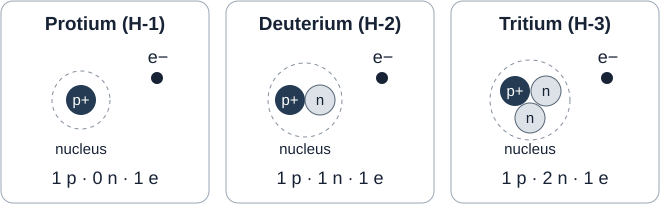

ทวนแล้วควรทำได้: อ่านและเขียนสัญลักษณ์นิวเคลียร์ หาโปรตอน–นิวตรอน–อิเล็กตรอน และแยกความต่างระหว่างไอโซโทปกับไอออน · อ่านทวนประมาณ 5–7 นาที แล้วลองตอบเอง
จำอนุภาค 3 ชนิดให้ได้
| อนุภาค | ตำแหน่ง | ประจุเทียบกับ \(e\) |
|---|---|---|
| โปรตอน \(\mathrm{p}^{+}\) | ในนิวเคลียส | \(+1\) |
| นิวตรอน \(\mathrm{n}\) | ในนิวเคลียส | \(0\) |
| อิเล็กตรอน \(\mathrm{e}^{-}\) | บริเวณรอบนิวเคลียส | \(-1\) |
จำเชิงเปรียบเทียบ: นิวตรอนหนักกว่าโปรตอนเล็กน้อย และทั้งคู่หนักกว่าอิเล็กตรอนมาก มวลเกือบทั้งหมดของอะตอมอยู่ในนิวเคลียส โปรตอนหนึ่งตัวหนักประมาณ 1,836 เท่าของอิเล็กตรอนหนึ่งตัว
ค่าประมาณ: \(m_p=1.673\times10^{-24}\,\mathrm{g}\), \(m_n=1.675\times10^{-24}\,\mathrm{g}\), \(m_e=9.109\times10^{-28}\,\mathrm{g}\); ขนาดประจุมูลฐาน \(e=1.602\times10^{-19}\,\mathrm{C}\) เป็นบวก ดังนั้นประจุอิเล็กตรอนคือ \(-e\)
อย่าลืมข้อยกเว้น: โปรเทียม \({}^{1}_{1}\mathrm{H}\) มีโปรตอน 1 ตัว แต่ไม่มีนิวตรอน
อ่านสัญลักษณ์นิวเคลียร์ให้เป็น
เขียนเป็น \({}^{A}_{Z}\mathrm{X}\) โดย \(X\) เป็นสัญลักษณ์ธาตุ \(Z\) คือ เลขอะตอม = จำนวนโปรตอน และ \(A\) คือ เลขมวล = จำนวนโปรตอน + นิวตรอน
ชนิดของธาตุขึ้นกับจำนวนโปรตอน: \(Z\) เท่ากันเป็นธาตุเดียวกัน แม้มีนิวตรอนหรืออิเล็กตรอนต่างกัน
สำหรับอะตอมเป็นกลาง: \(N_p=Z\), \(N_n=A-Z\) และ \(N_e=Z\)
ตัวอย่าง: \({}^{35}_{17}\mathrm{Cl}\) มีโปรตอน 17 นิวตรอน \(35-17=18\) และอิเล็กตรอน 17 ตัว
เลขมวลไม่ใช่มวลอะตอมเฉลี่ย: \(A\) เป็นจำนวนโปรตอนรวมกับนิวตรอน จึงเป็นจำนวนเต็ม ส่วนค่ามวลอะตอมในตารางธาตุโดยทั่วไปสะท้อนมวลเฉลี่ยตามสัดส่วนไอโซโทป เช่น ค่าใกล้ 35.45 ของคลอรีนไม่ใช่เลขมวลของอะตอมหนึ่งอะตอม
ไอโซโทปต่างกันตรงไหน
ไอโซโทป: อะตอมของธาตุเดียวกันที่มี \(Z\) เท่ากัน แต่จำนวนนิวตรอนต่างกัน จึงมี \(A\) ต่างกัน

- \({}^{1}_{1}\mathrm{H}\) โปรเทียม, \({}^{2}_{1}\mathrm{H}\) ดิวทีเรียม และ \({}^{3}_{1}\mathrm{H}\) ทริเทียม มีนิวตรอน 0, 1 และ 2 ตัว ตามลำดับ
- อะตอมเป็นกลางของไอโซโทปธาตุเดียวกันมีอิเล็กตรอนเท่ากัน จึงมีสมบัติทางเคมีคล้ายกัน แต่มวลต่างกัน
- การเป็นไอโซโทปไม่ได้หมายความว่าทุกไอโซโทปเป็นกัมมันตรังสี
ต่อยอด: นับอนุภาคของไอออน
เมื่อเกิดไอออนด้วยการรับหรือเสียอิเล็กตรอน จำนวนโปรตอนและนิวตรอนคงเดิม ประจุเขียนมุมขวาบน เช่น \({}^{27}_{13}\mathrm{Al}^{3+}\)
ให้ \(q\) เป็นเลขประจุพร้อมเครื่องหมาย เช่น \(3+\Rightarrow q=+3\), \(2-\Rightarrow q=-2\) และอะตอมเป็นกลางมี \(q=0\)
\[N_p=Z,\qquad N_n=A-Z,\qquad N_e=Z-q\]ไอออนบวก: เสียอิเล็กตรอน จึงมี \(N_e<N_p\) · ไอออนลบ: รับอิเล็กตรอน จึงมี \(N_e>N_p\)
ตัวอย่าง: \({}^{27}_{13}\mathrm{Al}^{3+}\) มีโปรตอน 13 นิวตรอน \(27-13=14\) และอิเล็กตรอน \(13-3=10\) ตัว การเสียอิเล็กตรอนไม่ทำให้เปลี่ยนเป็นธาตุอื่น
แยกให้ชัด: เปลี่ยนจำนวนโปรตอน → เปลี่ยนธาตุ · เปลี่ยนจำนวนนิวตรอนโดยคงโปรตอนเดิม → เปลี่ยนไอโซโทป · รับ/เสียอิเล็กตรอน → เปลี่ยนประจุ
ลองตอบด้วยตนเอง
ปิดส่วนสรุปก่อนตอบ เขียนเหตุผลหรือวิธีคิดในพื้นที่ว่าง แล้วกดเปิดเฉลยเพื่อตรวจคำตอบและวิธีคิด
คำถาม 1 — เติมจำนวนอนุภาค
| อะตอมหรือไอออน | โปรตอน | นิวตรอน | อิเล็กตรอน |
|---|---|---|---|
| \({}^{23}_{11}\mathrm{Na}\) | ________ | ________ | ________ |
| \({}^{23}_{11}\mathrm{Na}^{+}\) | ________ | ________ | ________ |
| \({}^{35}_{17}\mathrm{Cl}^{-}\) | ________ | ________ | ________ |
| \({}^{24}_{12}\mathrm{Mg}^{2+}\) | ________ | ________ | ________ |
เฉลย 1: ใช้ \(N_p=Z\), \(N_n=A-Z\) และ \(N_e=Z-q\)
| อะตอมหรือไอออน | โปรตอน | นิวตรอน | อิเล็กตรอน |
|---|---|---|---|
| \({}^{23}_{11}\mathrm{Na}\) | 11 | 12 | 11 |
| \({}^{23}_{11}\mathrm{Na}^{+}\) | 11 | 12 | 10 |
| \({}^{35}_{17}\mathrm{Cl}^{-}\) | 17 | 18 | 18 |
| \({}^{24}_{12}\mathrm{Mg}^{2+}\) | 12 | 12 | 10 |
เช่น \(\mathrm{Cl}^{-}\) มี \(N_e=17-(-1)=18\) ตัว ส่วน \(\mathrm{Mg}^{2+}\) มี \(N_e=12-2=10\) ตัว การเกิดไอออนไม่เปลี่ยนจำนวนโปรตอนหรือนิวตรอน
คำถาม 2 — แยกไอโซโทปกับไอออน
อธิบายว่า \({}^{35}_{17}\mathrm{Cl}\) กับ \({}^{37}_{17}\mathrm{Cl}\) เป็นไอโซโทปกันเพราะอะไร และมีจำนวนนิวตรอนต่างกันเท่าใด ถ้าชนิดแรกได้รับอิเล็กตรอน 1 ตัว จะเปลี่ยนเป็นธาตุอื่นหรือไม่ เพราะอะไร
เฉลย 2: ทั้งคู่มีโปรตอน 17 ตัวเท่ากัน จึงเป็นธาตุคลอรีนเหมือนกัน แต่มีนิวตรอน \(35-17=18\) และ \(37-17=20\) ตัว จึงเป็นไอโซโทปกันและมีนิวตรอนต่างกัน 2 ตัว
เมื่อ \({}^{35}_{17}\mathrm{Cl}\) รับอิเล็กตรอน 1 ตัว จะเป็น \({}^{35}_{17}\mathrm{Cl}^{-}\) มีอิเล็กตรอน 18 ตัว แต่โปรตอนยังเป็น 17 ตัว จึงยังเป็นคลอรีนไอโซโทปเดิม ไม่ได้เปลี่ยนธาตุ
คำถาม 3 — ย้อนหาสัญลักษณ์นิวเคลียร์
ไอออนของแคลเซียม \(\mathrm{Ca}\) มีนิวตรอน 22 ตัว อิเล็กตรอน 18 ตัว และประจุ \(2+\) จงหาจำนวนโปรตอน เลขอะตอม เลขมวล และเขียนสัญลักษณ์นิวเคลียร์พร้อมประจุ โดยแสดงวิธีคิด
เฉลย 3: ประจุ \(2+\) หมายถึงมีโปรตอนมากกว่าอิเล็กตรอน 2 ตัว ดังนั้น \(N_p=N_e+q=18+2=20\) ตัว
เลขอะตอม \(Z=20\) และเลขมวล \(A=N_p+N_n=20+22=42\) จึงเขียนได้เป็น \({}^{42}_{20}\mathrm{Ca}^{2+}\)
ตรวจกลับ: \(N_n=42-20=22\) และ \(N_e=20-2=18\) ตรงกับโจทย์
คำถาม 4 — แก้ข้อความให้ถูกต้อง
ก. “อะตอมทุกชนิดต้องมีนิวตรอน” จงยกตัวอย่างที่โต้แย้งข้อความนี้
ข. “เลขมวลเท่ากับมวลอะตอมเฉลี่ยในตารางธาตุเสมอ” จงแก้ข้อความและอธิบายความหมายของสองค่านี้
เฉลย 4 ก: ข้อความนี้ไม่ถูกต้อง เพราะโปรเทียม \({}^{1}_{1}\mathrm{H}\) มีโปรตอน 1 ตัวและนิวตรอน \(1-1=0\) ตัว
เฉลย 4 ข: เลขมวล \(A\) คือจำนวนโปรตอนรวมกับนิวตรอนของอะตอมหนึ่งอะตอม จึงเป็นจำนวนเต็มและไม่มีหน่วย ส่วนมวลอะตอมเฉลี่ยเป็นค่าเฉลี่ยถ่วงน้ำหนักของมวลไอโซโทปตามสัดส่วนที่พบ จึงไม่จำเป็นต้องเป็นจำนวนเต็มหรือเท่ากับเลขมวล เช่น คลอรีนมีเลขมวล 35 หรือ 37 แต่มีมวลอะตอมเฉลี่ยประมาณ \(35.45\,\mathrm{u}\)
ศึกษาต่อจากแหล่งทางการ
- สสวท. Project 14 — อนุภาคในอะตอม
- สสวท. Project 14 — เลขอะตอม เลขมวล และไอโซโทป
- สสวท. — eBook อะตอมและสมบัติของธาตุ
เรียบเรียงสรุปและคำถามใหม่โดยครูนิก อิงขอบเขตหัวข้ออนุภาคในอะตอมและไอโซโทปของ สสวท.; การนับไอออนเป็นส่วนเชื่อมไปยังหัวข้อไอออนและพันธะเคมี ค่าคงตัวปัดเพื่อใช้ทบทวนจาก NIST / CODATA 2022
After reviewing, you should be able to: read and write nuclear symbols, count protons, neutrons and electrons, and distinguish isotopes from ions. Allow about 5–7 minutes to read, then answer the recall questions.
Remember the three particles
| Particle | Location | Charge relative to \(e\) |
|---|---|---|
| Proton \(\mathrm{p}^{+}\) | In the nucleus | \(+1\) |
| Neutron \(\mathrm{n}\) | In the nucleus | \(0\) |
| Electron \(\mathrm{e}^{-}\) | In the region around the nucleus | \(-1\) |
Compare the masses: a neutron is slightly heavier than a proton; both are much heavier than an electron. Almost all atomic mass is concentrated in the nucleus. One proton has approximately 1,836 times the mass of one electron.
Approximate values: \(m_p=1.673\times10^{-24}\,\mathrm{g}\), \(m_n=1.675\times10^{-24}\,\mathrm{g}\), \(m_e=9.109\times10^{-28}\,\mathrm{g}\). The elementary charge magnitude \(e=1.602\times10^{-19}\,\mathrm{C}\) is positive, so an electron has charge \(-e\).
Remember the exception: protium, \({}^{1}_{1}\mathrm{H}\), has one proton and no neutrons.
Read a nuclear symbol
In \({}^{A}_{Z}\mathrm{X}\), \(X\) is the element symbol, \(Z\) is the atomic number = number of protons, and \(A\) is the mass number = number of protons + neutrons.
Proton number determines the element: equal \(Z\) means the same element, even if neutron or electron numbers differ.
For a neutral atom: \(N_p=Z\), \(N_n=A-Z\), and \(N_e=Z\).
Example: \({}^{35}_{17}\mathrm{Cl}\) contains 17 protons, \(35-17=18\) neutrons and 17 electrons.
Mass number is not average atomic mass: \(A\) is the whole-number count of protons plus neutrons. A periodic-table atomic mass generally reflects an average weighted by isotope abundances. Chlorine's value near 35.45 is not the mass number of a single atom.
What differs between isotopes?
Isotopes are atoms of the same element with equal \(Z\) but different neutron numbers, and therefore different \(A\).
- \({}^{1}_{1}\mathrm{H}\) (protium), \({}^{2}_{1}\mathrm{H}\) (deuterium) and \({}^{3}_{1}\mathrm{H}\) (tritium) contain 0, 1 and 2 neutrons, respectively.
- Neutral atoms of isotopes of the same element have equal electron numbers and similar chemical properties, but different masses.
- Being an isotope does not mean that every isotope is radioactive.
Connection: counting particles in an ion
When an ion forms by gaining or losing electrons, proton and neutron numbers stay unchanged. Write the charge at the upper right, as in \({}^{27}_{13}\mathrm{Al}^{3+}\).
Let \(q\) be the signed charge number: \(3+\Rightarrow q=+3\), \(2-\Rightarrow q=-2\), and a neutral atom has \(q=0\).
\[N_p=Z,\qquad N_n=A-Z,\qquad N_e=Z-q\]Positive ion: electrons lost, so \(N_e<N_p\). Negative ion: electrons gained, so \(N_e>N_p\).
Example: \({}^{27}_{13}\mathrm{Al}^{3+}\) contains 13 protons, \(27-13=14\) neutrons and \(13-3=10\) electrons. Losing electrons does not change the element.
Keep the changes distinct: change proton number → change the element; change neutron number while keeping proton number → change the isotope; gain or lose electrons → change the charge.
Try it yourself
Cover the summary before answering. Write your reasoning in the spaces, then show the answers to check your work and reasoning.
Question 1 — Complete the particle counts
| Atom or ion | Protons | Neutrons | Electrons |
|---|---|---|---|
| \({}^{23}_{11}\mathrm{Na}\) | ________ | ________ | ________ |
| \({}^{23}_{11}\mathrm{Na}^{+}\) | ________ | ________ | ________ |
| \({}^{35}_{17}\mathrm{Cl}^{-}\) | ________ | ________ | ________ |
| \({}^{24}_{12}\mathrm{Mg}^{2+}\) | ________ | ________ | ________ |
Answer 1: Use \(N_p=Z\), \(N_n=A-Z\) and \(N_e=Z-q\).
| Atom or ion | Protons | Neutrons | Electrons |
|---|---|---|---|
| \({}^{23}_{11}\mathrm{Na}\) | 11 | 12 | 11 |
| \({}^{23}_{11}\mathrm{Na}^{+}\) | 11 | 12 | 10 |
| \({}^{35}_{17}\mathrm{Cl}^{-}\) | 17 | 18 | 18 |
| \({}^{24}_{12}\mathrm{Mg}^{2+}\) | 12 | 12 | 10 |
For example, \(\mathrm{Cl}^{-}\) has \(N_e=17-(-1)=18\) electrons, while \(\mathrm{Mg}^{2+}\) has \(N_e=12-2=10\). Ion formation does not change proton or neutron numbers.
Question 2 — Distinguish isotopes from ions
Explain why \({}^{35}_{17}\mathrm{Cl}\) and \({}^{37}_{17}\mathrm{Cl}\) are isotopes and find the difference in neutron number. If the first atom gains one electron, does it become a different element? Explain.
Answer 2: Both have 17 protons, so both are chlorine. Their neutron numbers are \(35-17=18\) and \(37-17=20\). They are isotopes whose neutron numbers differ by 2.
Gaining one electron changes \({}^{35}_{17}\mathrm{Cl}\) into \({}^{35}_{17}\mathrm{Cl}^{-}\), with 18 electrons. It still has 17 protons, so it remains chlorine and the same isotope.
Question 3 — Work backwards to a nuclear symbol
A calcium ion, \(\mathrm{Ca}\), has 22 neutrons, 18 electrons and charge \(2+\). Find its proton number, atomic number and mass number, then write its nuclear symbol with charge. Show your reasoning.
Answer 3: A charge of \(2+\) means there are two more protons than electrons. Therefore \(N_p=N_e+q=18+2=20\).
The atomic number is \(Z=20\) and the mass number is \(A=N_p+N_n=20+22=42\). The symbol is \({}^{42}_{20}\mathrm{Ca}^{2+}\).
Check: \(N_n=42-20=22\) and \(N_e=20-2=18\), as given.
Question 4 — Correct the statements
a. “Every atom must contain neutrons.” Give a counterexample.
b. “Mass number always equals the average atomic mass in the periodic table.” Correct the statement and explain the two quantities.
Answer 4 a: The statement is false. Protium, \({}^{1}_{1}\mathrm{H}\), has one proton and \(1-1=0\) neutrons.
Answer 4 b: Mass number \(A\) counts the protons plus neutrons in one atom, so it is a whole number with no unit. Average atomic mass is a weighted mean of isotope masses using their abundances. It need not be a whole number or equal a mass number. For example, chlorine isotopes have mass numbers 35 and 37, while chlorine's average atomic mass is about \(35.45\,\mathrm{u}\).
Continue with official resources
- IPST Project 14 — Subatomic particles (Thai)
- IPST Project 14 — Atomic number, mass number and isotopes (Thai)
- IPST — Atoms and Properties of Elements eBook (Thai)
Original review and recall questions by Kru Nick, following the IPST subatomic-particles and isotopes topic. Ion counting connects to ion formation and chemical bonding. Rounded constants are based on NIST / CODATA 2022.